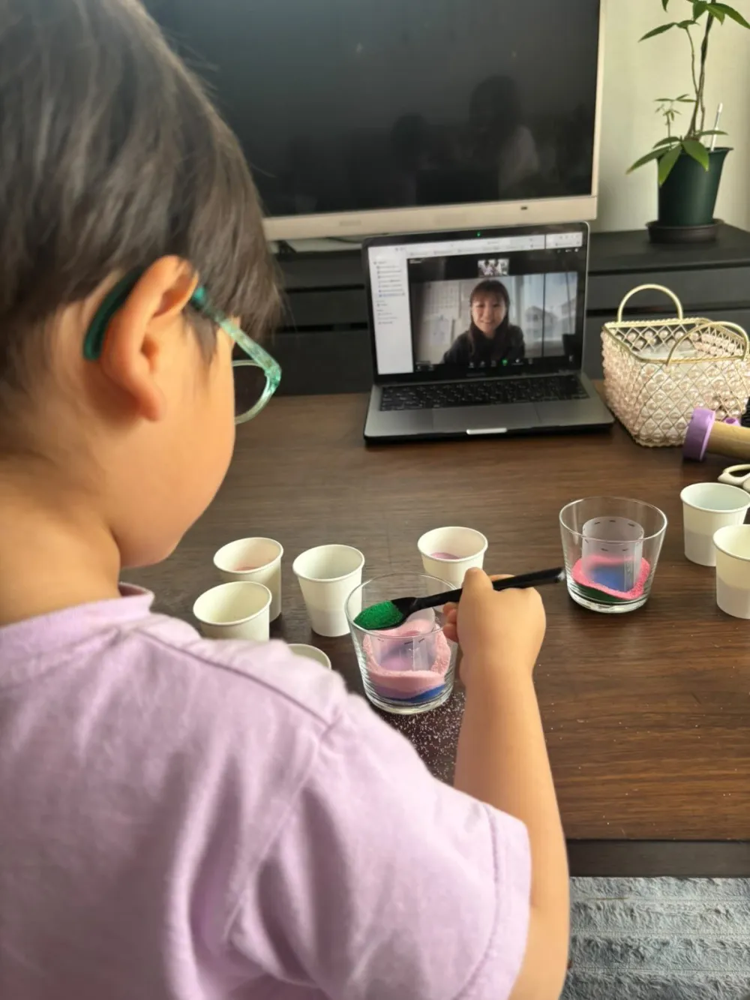
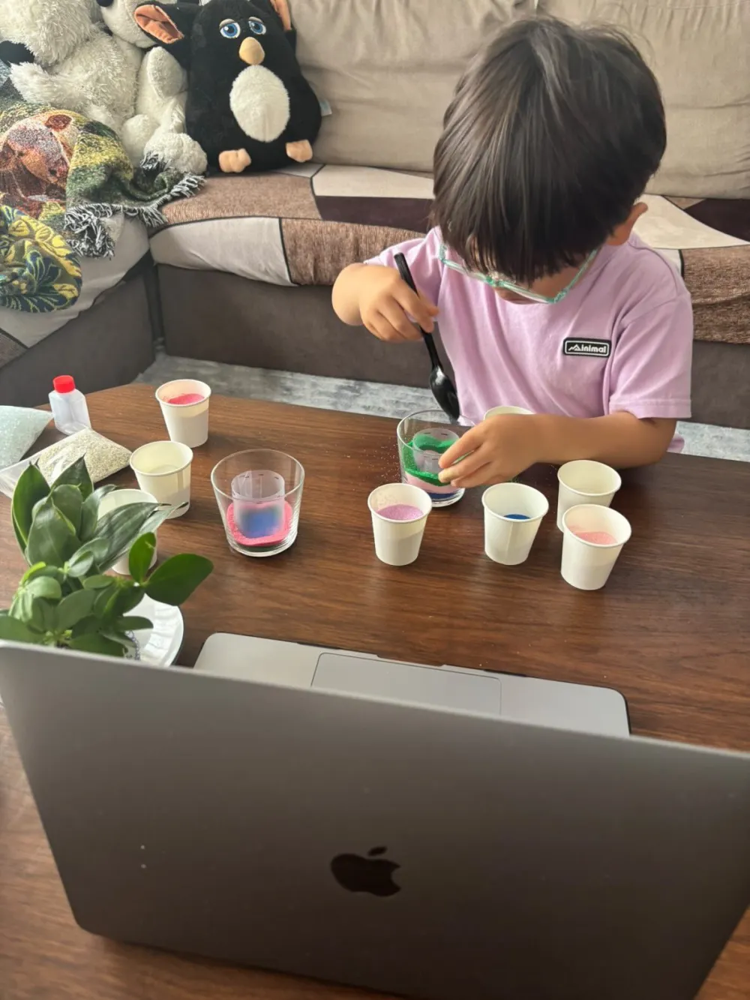

先日、4歳の男の子とママが、おうちからオンラインサンドアート体験に参加してくれました。
パソコンの画面越しに講師とつないで、色とりどりの砂を一層ずつ重ねていく——「まだ小さいけど大丈夫かな？」というママの心配をよそに、最後まで集中して世界にひとつの作品を完成させてくれました。この記事では、その当日の様子と、オンラインでも小さな子が夢中になれる理由をご紹介します♪
この記事でわかること
オンラインサンドアート体験とは？
オンラインサンドアート体験は、ご自宅にいながら、画面越しに講師と一緒にサンドアートを作るレッスンです。事前にお届けする教材（色砂・グラス・スプーン・飾り）を使い、Zoomなどのビデオ通話で講師がリアルタイムにサポートします。
サンドアートは、グラスに色砂を重ねていくだけのシンプルな工程。「上手・下手」の差がつかず、どんな入れ方でも美しく仕上がるので、3歳・4歳の小さなお子さまでも安心して楽しめます。教室に通わなくても、おうちで本格的な創作体験ができるのが魅力です。
4歳の男の子の体験レポート
今回参加してくれたのは、メガネがよく似合う4歳の男の子。リビングのテーブルにパソコンを置いて、画面の中の講師と「よろしくお願いします！」のごあいさつからスタートしました。

画面の先の先生を見ながら、ひとさじずつ慎重に。
テーブルには、ピンク・水色・緑・紫などカラフルな色砂のカップがずらり。「次は何色にする？」の問いかけに、真剣な表情で色を選びます。小さなスプーンで砂をすくってグラスへ入れる作業は、手先の集中力がぐんと高まる時間。少しこぼれても気にせず、夢中で重ねていきます。

色とりどりの砂を、自分のペースで重ねていきます。
そして完成したのが、こちらの2つの作品。砂の上に多肉植物を飾れば、そのままインテリアになる素敵な仕上がりです。できあがった瞬間、男の子は得意げな満面の笑み——画面の向こうの先生も一緒に「やったね！」と大喜びでした。
参加してくれたママの感想
- 「4歳でも最後まで集中できて驚きました。普段は飽きっぽいのに、ずっと真剣で」
- 「準備も片付けもラクで、おうちでこんな本格的な体験ができるなんて」
- 「画面越しでも先生がやさしく声をかけてくれるので、人見知りの息子も楽しめました」
オンラインでも夢中になれる理由
理由1：失敗がないから自信になる
砂を入れるだけでどんな順番・どんな色でも美しく完成。「できた！」という成功体験が、小さな子の自信と笑顔につながります。
理由2：手先と集中力を育てる
スプーンで砂をすくって入れる動作は、指先の巧緻性を養う絶好の機会。気づけば30分以上も夢中——遊びながら自然と集中力が育ちます。
理由3：画面越しでも「ひとり占め」のサポート
講師が一つひとつの工程をゆっくり見せながら進めるので、置いていかれません。マンツーマンに近い距離感で、人見知りのお子さまも安心です。
理由4：作品が残る・飾れる
完成品は多肉植物を添えてそのままインテリアに。「自分で作ったよ！」とご家族に見せる時間が、何よりの思い出になります。
おうちでオンライン体験、LINEで気軽に相談♪
ご希望日・お子さまの年齢をお知らせください。
全国どこからでもご参加いただけます。
体験の流れ（教材お届け〜完成まで）
LINEで予約・日程調整
お子さまの年齢・ご希望日をLINEでお知らせください。日程を調整してご案内します。
教材がご自宅に届く
色砂・グラス・スプーン・飾りなど、必要な材料一式を事前にお届け。準備の手間はありません。
当日オンラインで接続
パソコンやスマホでビデオ通話に接続。画面越しに講師と一緒に作っていきます。
世界に一つの作品が完成
多肉植物を飾って仕上げたら完成！そのままおうちのインテリアとして飾れます。
料金・対象・準備するもの
| 料金 | 1名 2,000円〜 （教材費込み・送料別） |
|---|---|
| 所要時間 | 約45分〜1時間 |
| 対象年齢 | 3歳以上（未就学児は保護者のサポート推奨） |
| 対応エリア | 全国どこでもOK |
| 使用ツール | Zoom など（パソコン・スマホ・タブレット） |
| 準備するもの | ネット環境とお届けした教材だけ |
こんな方におすすめ
- 近くに習い事・教室がない遠方にお住まいの方
- 3〜6歳の未就学児の習い事・知育を探している方
- 雨の日・寒い日のおうち時間を充実させたい方
- 人見知り・場所見知りで外の教室がちょっと苦手なお子さま
- 夏休み・冬休みのおうち工作・自由研究を探している方
- 祖父母と離れて暮らすご家族のオンライン交流として
よくある質問
何歳から参加できますか？
3歳から参加いただけます。今回は4歳の男の子が、ママのサポートを受けながら最後まで集中して作品を完成させてくれました。砂を入れるだけのシンプルな工程なので、未就学児のお子さまでも無理なく楽しめます。
オンラインでも小さな子がちゃんとできますか？
はい。画面越しに講師が一つひとつの工程をゆっくり見せながら進めるので、小さなお子さまでも置いていかれません。失敗しても美しく仕上がるのがサンドアートの良いところ。多くのお子さまが夢中になって取り組みます。
材料は自分で用意するのですか？
いいえ、必要な色砂・グラス・スプーン・飾りなどの教材一式を事前にご自宅へお届けします。当日はパソコンやスマホでオンラインにつなぐだけ。準備の手間がかからないので、おうち時間に気軽に楽しめます。
全国どこからでも参加できますか？
はい、全国どこからでもご参加いただけます。遠方の方や近くに教室がない方、雨の日・寒い日でもおうちから参加できるのがオンライン体験の魅力です。
おうちでオンラインサンドアート体験♪
1名 2,000円〜｜3歳からOK｜全国対応｜教材お届け
LINEで「オンライン体験の相談」と送るだけ！日程をご案内します。

原野 玲未REMI HARANO
サンドアート講師 / Webデザイナー / 5児の母
福岡県在住。日本サンドアート協会認定講師として年間100件以上のワークショップを開催。5児の母としての経験を活かし、オンラインでも小さなお子さまが夢中になれるレッスンを全国にお届けしています。